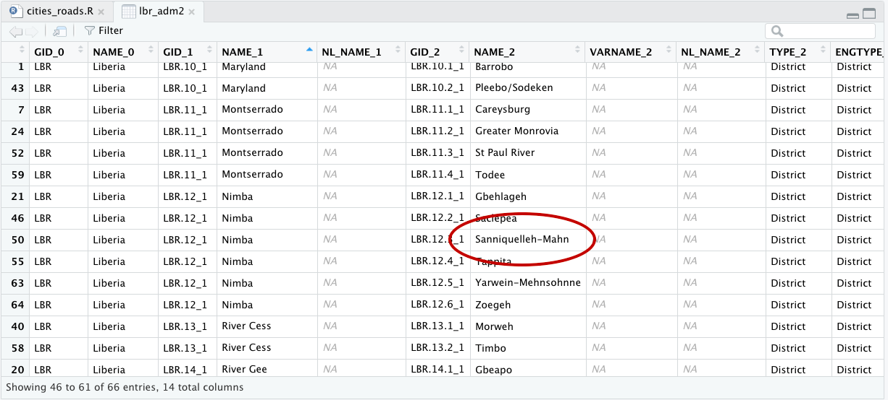
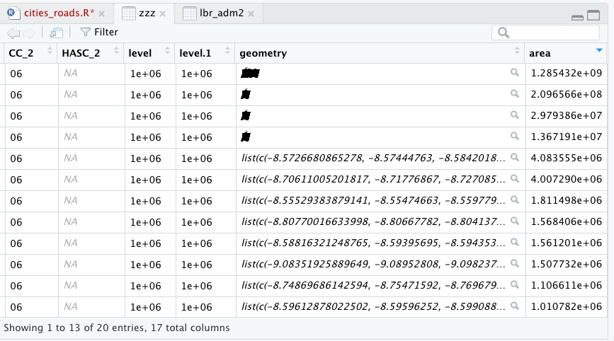
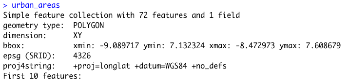

De facto description of human settlements and urban areas
For project 3, instead of starting with your LMIC at the scale of its international boundary, this time you will increase the scale of your focus area to an adm2 or adm3 within your country. You will then use the probability distribution from your population raster as the basis for distributing of all persons within your adm2. Then you will identify the de facto boundaries of all urban areas based on the density of identified human settlements, instead of the typically used administrative boundaries, which are politically defined and do not necessarily represent the spatial continuity of urbanization. Finally, you will use those organically derived boundaries to extract population totals for each de facto city, town and village.
To begin, load the typical packages that we have been using in our previous labs. Additionally, we will add two new packages maptools and spatstat. Set your working directory, use the raster() command to load your worldpop ppp raster, and also use the read_sf() command to load your adm2 or adm3. If you haven't been using the GADM shapefiles, be sure to make the switch at the beginning of this lab, as they have demonstrated over the course of this semester to be more reliable and better maintained than HDX adm shapefiles.
rm(list=ls(all=TRUE))
# install.packages("raster", dependencies = TRUE)
# install.packages("sf", dependencies = TRUE)
# install.packages("tidyverse", dependencies = TRUE)
# install.packages("maptools", dependencies = TRUE)
# install.packages("spatstat", dependencies = TRUE)
library(raster)
library(sf)
library(tidyverse)
library(maptools)
library(spatstat)
setwd("~/path_to/your/working_directory/")
your_pop15 <- raster("your_ppp_2015.tif")
your_adm2 <- read_sf("gadm36_YOUR_2.shp")
After reading your adm2 into R as a sf object, view the data and consider the names of the different adm2s that comprise your LMIC. Select one of the adm2s that you think might be interesting to analyze at a higher resolution. You might need to google the name of the adm2 within your country in order to find out more information about it, in particular its population. For my analysis, I am considering an administrative subdivision in Liberia that is located in the county Nimba near the northern border with Guinea, named Sanniquelleh-Mahn.

I enter the name of my prospective district into google and search for its population, which returns an estimate of about 125,000 persons inhabiting the district. This is a good size to work with for this lab, although you could possibly select a district or area that is slightly larger, to start, try to keep the population under 200,000. I will then use the %>% pipe operator and filter() command to subset the Sanniquelleh-Mahn district from my adm2 sf object. If your adm2s are too large, you are also welcome to use an adm3 from within your LMIC. If you country is smaller in size, it might also be best to select an adm1. It just depends on the circumstances.
your_subset_district <- your_adm2 %>%
filter(NAME_2 == "Name-of-district")
Confirm your subset object exists. You can also have a look at it using the plot(st_geometry(your_adm2)).

As you have done in previous exercises, use the crop() and mask() function to subset your rasterLayer to just that part that is located within your selected adm2. After cropping and masking your world pop person per pixel raster layer, use the cellStats() command to calculate the total number of people in your adm2 and assign it as a value to an object.
your_adm2_pop15 <- crop(your_LMIC_pop15, your_subset_district)
your_adm2_pop15 <- mask(your_adm2_pop15, your_subset_district)
pop <- floor(cellStats(your_adm2_pop15, 'sum'))
Entering pop into the console in my case returns a value of 124388, which is the estimated population of Sanniquelleh-Mahn in 2015. Also use the pdf() and dev.off() commands to produce a pdf file of your subset raster with the subset sf adm2 object added to the plot.
png("sm_pop15.png", width = 800, height = 800)
plot(your_masked_raster, main = NULL)
plot(st_geometry(your_subset_sf), add = TRUE)
dev.off()
The above script produces the following plot as a pdf file in your working directory. In addition to seeking an adm2 subdivision that is between 100,000 and 200,000 persons, also notice that the area of my selected district is about .7 degree longitude by .6 degrees latitude. Likewise, select an area that is less than 1 degree longitude by 1 degree latitude. If you want to increase the size of the area being analyzed and likewise the population residing within that space, you will have an opportuntity to do that later, but for now, start small.

For the next step, you will use a slightly older, but very powerful R package called spatstat, which is used for all kinds of spatial statistics. Spatial statistics typically involves much more than simply descriptive statistics, analytical models, and inference, it typically also involves some description and analysis of points, lines and polygons in that space. For example, one might want to know how to describe a pattern of points that exists throughout a plane, and how it compares to a similarly existing pattern of points that is considered completely spatially randomly dispersed. Additionally, one might also want to know if there is a spatial relationship with certain points within a point pattern and other points within that point pattern based on attributes of those points or other geospatial features. In many ways, spatial statistics is just like traditional statistics, with the exception that an additinal layer of spatial and potentially geospatial complexity has been added.
To start your basic spatial analysis, of your selected adm2, you will need to use the st_write() command to write your sf object as a shapefile back to your working directory, in order to reimport using a command that is compatible with spatstat.
st_write(your_adm2_sf, "name_of_file.shp", delete_dsn=TRUE)
your_adm2_with_mtools <- readShapeSpatial("name_of_file.shp")
The readShapeSpatial() command is from the maptools:: library and will create a SpatialPolygonsDataFrame in your workspace, which I have named above just your_adm2_with_map_tools. You should only briefly need to use this command. After creating your adm2_with_mtools object, use the as(obj, "owin") command to create a window object that will be used with the rpoint() function from the spatstat:: library. You can just call the new object win, and also have a look at it by executing plot(win).
win <- as(your_adm2_with_mtools, "owin")
For the next command, you will use this win object as the window or boundary for locating a number of points equal to the total population of your adm2, and where each point represents one person. In order to determine each persons location, use the spatial probability distribution of population decribed by your masked raster of your adm2.
my_adm2_ppp <- rpoint(pop, f = as.im(my_masked_adm2_raster), win = win)
After creating your point pattern, have a look at it, by typing the name of your object in the R console. You should notice that R recognizes your object that represents the geospatial distribution of all persons throughout your adm2 as a planar point pattern (or .ppp class object) as well as the number of points within that ppp. Plot both the win and ppp objects together as a .png.
png("your_file.pdf", width = add_width, height = add_height)
plot(win, main = NULL)
plot(your_ppp, cex = add_number, add = TRUE)
dev.off()
The following image is one instance from a probability model (based on 2015 data) used to distribute all 124,388 persons geospatially throughout Sanniquelleh-Mahn. I have plotted both my window and planar point patter as a .png graphics object and have set the width = and height = arguments to 2000 each, while the cex = argument is set to 0.15. You will want to test some of the parameters with the output on your own computer to see what produces the best results.

In order to best use this newly created object, we need to estimate a model that describes the spatial probability density function of this planar point pattern. Spatial probability density function or kernel density estimation is a three dimension version of the density plot that we looked at in a previous project. You may recall that the two dimension probability density function created a line or smoothed function that closely followed the histogram of our observations. Now with a three dimension, spatial probability density function, we will estimate a density function that will match histograms of observations in both the x & y directions (or longitude and latitude). The good news is, there is a function to do this for us, but it requires two steps. The first step is to calculate the bandwidth that will be used in the density.ppp() function. While the bandwidth produced will simply be a number, in order to calculate this number, over a three dimensional space, can be fairly computationally intense. Fortunately, we have limited the scope of our study area, as well as the number of points located within that bounary, and it shouldn't take to terribly long. The following command took about 15 minutes on my MacBook Air for the ~125,000 point pattern.
bw <- bw.ppl(your_ppp)
Once you have calculated the value of your bandwidth (in my case "sigma" resulted in a 0.003077435) use the save() and load() commands, so you don't need to rerun bw.ppl() each time.
#bw <- bw.ppl(sm_pipo)
#save(bw, file = "bw.RData")
load("bw.RData")
After you have estimated the value of the bandwidth for your spatial probability density function, then execute the function itself.
your_density_image <- density.ppp(your_ppp, sigma = bw)
The resulting object is a real valued pixel image, which is kind of like a raster layer, and it represents a function that describes the probability of the population density at each pixel throughout the entire space.
As you may notice, the scale on the right hand side of our density image, provides a representation of where population densities are the highest, or in more common terms, where urbanization has occurred. The goal of this part of the lab is to identify the boundaries of each uniform and continuous urban area and then to assign the summed population value to each of those polygons. To start that process, you will need to convert your density image to a spatial grid, then back to an image, and finally to contour lines that we will use to begin creating our polygons. A key part of the contourLines() command is the levels = argument on line 3 below. In my example, I have set the levels = 1000000, which is the equivalent of the 1000000 density estimate contour line in the plot above. What that means, is that R will produce a line that is equivalent to that contour value across the entire probabilty density function of the population. You will want to modify your levels = arugment to coorespond with the values on your produced density plot. The value you choose will represnt the threshold set that uniformily and continuously differentiates urban areas from non-urban areas. Later you will reassess this threshold after considering each polygon's area as well as its population.
Dsg <- as(your_ppp, "SpatialGridDataFrame") # convert to spatial grid class
Dim <- as.image.SpatialGridDataFrame(Dsg) # convert again to an image
Dcl <- contourLines(Dim, levels = 1000000) # create contour object
SLDF <- ContourLines2SLDF(Dcl, CRS("+proj=longlat +datum=WGS84 +no_defs"))
Once you have your object named SLDF, which is a Spatial Lines Data Frame, convert it back to an sf object using the st_as_sf() command. The resulting object will be a MULTILINESTRING.
sf_multiline_obj <- st_as_sf(SLDF, sf)
By plotting the spatial grid data frame with the newly created multiline object on top, the goal of our exercise will begin to become more readily visible.

You will notice that a number of the contour lines are closed and already prepared for conversion from multiline objects to polygons. This is particularly true in the central areas, where a number of enclosed lines have been created. On the contrary, the more densely populated area represented by the more red, orange and yellow collored gridcells, intersects directly with the edge of our administrative boundary and will present a more difficult challenge in order to create its polygon. In order to create polygons that represent each indiividual urbanized area, we will need to isolate inside area polygons from outside area polygons. First start with the st_polygonize() command to convert all of the closed polylines that are valid for conversion to polygons.
inside_polys <- st_polygonize(SLDFs)
Run plot(st_geometry(inside_polys)) and you should notice a plot produced with only the internal polygons. To recapture the contour lines from our density plot that did not close, use the st_difference() command to isolate these linear elements.
outside_lines <- st_difference(SLDFs, inside_polys)
Use plot(st_geometry(outside_lines)) to view the resulting difference from the two objects and notice that these are the contour lines that did not close since they intersected with the adm2 boundary.
In order to fuse these unenclosed contour lines with the administrative boundary, I will use the st_buffer() command to offset each line, just a little bit, so as to make a cut in the adm2 border, after I intersect the two objects. Also use the st_cast() command to convert the geometric collection of objects into individual polygons, where each one potentially represents one urbanized area.
z <- st_buffer(outside_lines, 0.001)
zz <- st_difference(adm2_sf, z)
zzz <- st_cast(zz, "POLYGON")
You will notice that the resutant polygon, has been subdivided into many different polygons with a very small space where the unenclosed contour lines intersected the adm2 border. While this is helpful in the regard that now we in fact have polygons representing each area, it also presents two subsequent problems. First, we now have a very large polygon that represents all of Sanniquelleh-Mahn that had values below the selected contour line value. Second, there are also polygons that resulted from urbanized areas intersecting and then reintersecting the adm2 border and thus resulting in smaller pockets of areas that also have values below the selected density contour line. We will need to execute two appraoches in resolving these two issues.

The large polygon that represents that entire area of the adm2 that was not within the contour line, is also the largest polygon in the simple feature collection. To remove it, calculate the area of all polygons in the collection using st_area() and then filter() based on the size of the largest feature. To simpify the calculation, set the class of the area variable to numeric when calculating the area.
zzz$area <- as.numeric(st_area(zzz))
Now look at the data for your created sf object (I have named it zzz in the above example) and order the area from largest to smallest.

In this example, the largest polygon has an area of about 1.28 x 10^9 m^2. Remove that polygon, but retain the rest.
subpolys <- zzz %>%
filter(area < 250000000)
To evaluate the remaining polygons that were created from the intersection of the outside lines with your adm2 border, we will use the extracted population for each polygon. First extract() the population values from your adm2 world pop raster and assign each polygons ID to each gridcell. Next, aggregate the extracted values, group by polygon ID while also calculating the sum of all gridcells within each polygon. Finally, add those values to your newly created subpolygon sf object (that represents the intersection of the outside lines with the adm2 border). Since we are using a masked raster of your adm2 area, this single layer extract() command should take significantly less time than with the larger, stacked rasterBrick used in previous projects.
subpolys_extract <- raster::extract(sm_pop15, subpolys, df = TRUE)
subpolys_totals <- subpolys_extract %>%
group_by(ID) %>%
summarize(pop15 = sum(lbr_ppp_2015, na.rm = TRUE))
subpolys <- subpolys %>%
add_column(pop15 = subpolys_totals$pop15)
Have a look at the pop15 value for each polygon in your subpolys object.

Removing the largest polygon was very effective at removing all areas that represented densities below the selected contour line. You may also want to plot the subpolys (over the density function) to consider location and size.
png("subpolys.png", width = 1200, height = 1200)
plot(sm_dens, main = NULL)
plot(st_geometry(subpolys), add = TRUE)
dev.off()
I'm going to use the filter() command to remove only those polygons with populations less than 750 persons. You may want to increase or decrease this value based on your results. A more thorough analysis might involve considering population density in setting this threshold, but for now just use an ad hoc measure.
subpolys_filtered <- subpolys %>%
filter(pop15 > 750)
You can compare earlier results with the newly produced filtered subpolys.
png("subpolys_filtered.png", width = 1200, height = 1200)
plot(sm_dens, main = NULL)
plot(st_geometry(subpolys_filtered), add = TRUE)
dev.off()
We have evalutated the outside polygons by area and population, now let's likewise evaluate the inside polygons we have already created by population. To transform a geometric collection into individual polygons use the st_geometric_extract() command. Follow that by again extracting population values then aggregating and summing their values by each polygons ID. Finally, add those values as a column to your inside_polys sf object.
inside_polys <- st_collection_extract(inside_polys, "POLYGON")
ips_extract <- raster::extract(sm_pop15, inside_polys, df = TRUE)
ips_totals <- ips_extract %>%
group_by(ID) %>%
summarize(pop15 = sum(lbr_ppp_2015, na.rm = TRUE))
inside_polys <- inside_polys %>%
add_column(pop15 = ips_totals$pop15)
As with the outside polygons, set a value to filter population densities that do not qualify as urbanized.
inside_polys_filtered <- inside_polys %>%
filter(pop15 > 150)
We finally at the point where we will union the two sets of polygons, extract all population values and designate our de facto human settlements and urbanized areas. First use the st_union() command to combine both sets of polygons into a single sf feature.
uas <- st_union(inside_polys_filtered, subpolys_filtered)
Use the st_cast() command to transform any multipolygons into individual entities.
urban_areas <- st_cast(uas, "POLYGON")
At this point, most of the columns in our urban_areas are nonsensical and can be simply removed. Just be sure to keep the geometry.
urban_areas[ ,1:19] <- NULL
Have a quick look at the urban area polygons and density.
Extract all population values and add them to your urban_areas polygons.
uas_extract <- raster::extract(sm_pop15, urban_areas, df = TRUE)
uas_totals <- uas_extract %>%
group_by(ID) %>%
summarize(pop15 = sum(lbr_ppp_2015, na.rm = TRUE))
urban_areas <- urban_areas %>%
add_column(pop15 = uas_totals$pop15)
Again, look at your sf object urban_areas by entering its name into the console.

Compare the output when controlling for the number of unique polygons in your simple feature object.
urban_areas %>%
unique()

It seems somehow through the process of spatial modifcations and unions, I captured some repetitive polygons. This might have an impact on plotting, so I will go ahead and assign the unique() set of simple features to the object, by simply overwritting it urban_areas <- urban_areas %>% unique().
Use ggplot() to plot each of your de facto human settlements and urban areas.
ggplot() +
geom_sf(data = sm,
size = 0.75,
color = "gray50",
fill = "gold3",
alpha = 0.15) +
geom_sf(data = urban_areas,
fill = "lightblue",
size = 0.45,
alpha = 0.5)
Use ggsave() to save your plot.

In addition to identifying the urban areas, also describe their population and density. You should already have population as a variable in your urban_areas object, but now also add density. You will recall that we used this same snippet in the previous exercise. Be sure to load the library(units) before using the set_units() command.
your_sf_obj <- your_sf_object %>%
mutate(add_name_here = st_area(your_sf_object) %>%
set_units(km^2)) %>%
mutate(density = as.numeric(pop_variable_here / area_variable_name_here))
Instead of assigning a geometric scale to the actual polygons, use a point that will be sized and assigned a color according to both population and density. First cast() the centroid of each polygon as a new simple features object.
ua_cntr_pts <- urban_areas %>%
st_centroid() %>%
st_cast("MULTIPOINT")
Again, use ggplot() to plot a map of de facto urban areas and human settlements where each uniform and continuous area is statistically described in terms of its population as well as its density.
ggplot() +
geom_sf(data = adm2_sf,
size = 0.75,
color = "gray50",
fill = "gold3",
alpha = 0.15) +
geom_sf(data = urban_areas_sf,
fill = "lightblue",
size = 0.25,
alpha = 0.5) +
geom_sf(data = cntr_pts_sf,
aes(size = add_var_here,
color = add_var_here),
show.legend = 'point') +
scale_color_gradient(low = "add_color", high = "add_color")

Team Challenge Question
Follow the steps from above used to produce the plots describing Liberia, but instead each team member should use their own selected LMIC country. Produce a geospatial plot that describes the de facto boundaries of human settlements and urbanization throughout your selected (and subset) administrative area. Represent the continuum of values (using size and color) of two continuous variables, simultaneously.
Meet with your group and prepare two different plots for the Friday informal group presentation (at the end of class). Then as a group, upload all 5 team members plots to #data100_igps (informal group presentations) by Sunday night.
Individual Stretch Goal 1
Go back and plot all of the subdivisions within your adm2, adm3 or adm4 and add their names so you can identify which subdivision is adjacent to the one you have already selected. The following code will filter from my adm2 sf object all of the districts that are located within the county (adm1) named Nimba. You may recall using the filter and plot like during Project 1.
lbr_adm2 %>%
filter(NAME_1 == "Nimba") %>%
ggplot() +
geom_sf(size = .15) +
geom_sf_text(aes(label = NAME_2),
size = 2.5)
This will produce the following ggplot output.

The central and most dominant urban area within Sanniquelleh-Mahn was along the south-western border of the district, not only presenting urban densities with the shared international border with Guinnea to the north, but also with the internal Liberian district to the south. The name of this district in my case Saclepea. Choose an adm2 that borders with the original one you selected and then continue to conduct an analysis that defines de facto urbanized areas. Instead of using area and population as the filter() variables, this time we will simply use density.
As before, use the pipe operators to filter your newly selected adm2 district.
sp <- lbr_adm2 %>%
filter(NAME_2 == "Saclepea")
Again, crop(), mask(), and use cellStats() to define a variable that represents the adm2's population.
sp_pop15 <- crop(lbr_pop15, sp)
sp_pop15 <- mask(sp_pop15, sp)
pop <- floor(cellStats(sp_pop15, 'sum'))
Use the st_write() command from the sf:: package to export your simple features object to your working directory then reimport it using the readShapeSpatial() command frmo the maptools:: package. You may get some warnings from R but use the plot(win) command to confirm your newly created win object plots fine.
st_write(sp, "sp.shp", delete_dsn=TRUE)
sp_mt <- readShapeSpatial("sp.shp")
win <- as(sp_mt, "owin")
Create your planar point pattern object using the random point command from spatstat:: with the newly created sp_pop15 raster object as the basis for the spatial probability distribution and the win object as the window or boundary for those randomly placed points (each one again representing one person).
sp_ppp <- rpoint(pop, f = as.im(sp_pop15), win = win)
Again use the bw.ppl() command to define the value of the bandwidth you will use in the spatial probability function that will describe population density throughout your newly selected adm2. Also, again, use the save() and load() command to expedite your script after running the bw.ppl() command one time.
#bw <- bw.ppl(sp_ppp)
#save(bw, file = "bw_sp.RData")
load("bw_sp.RData")
Use the density.ppp() command to produce a spatial probability density function from the window that serves as the boundary of your planar point pattern and your calculated band width.
sp_dens <- density.ppp(sp_ppp, sigma = bw)
Again, convert your density function to a spatial grid data frame in order to extract the contour line that will be used in your extract. Use the same value in your levels = argument from your previous adm2 object. Convert your spatial lines data frame object to an sf object using the st_as_sf() command.
Dsg <- as(sp_dens, "SpatialGridDataFrame") # convert to spatial grid class
Dim <- as.image.SpatialGridDataFrame(Dsg) # convert again to an image
Dcl <- contourLines(Dim, levels = 1000000) # create contour object
SLDF <- ContourLines2SLDF(Dcl, CRS("+proj=longlat +datum=WGS84 +no_defs"))
SLDFs <- st_as_sf(SLDF, sf)
Check your output by plotting a png() object to your working directory. Don't forget to use dev.off() to close the graphical device after plotting the png.

Create polygons from the enclosed, inside lines using the st_polygonize() command.
inside_polys <- st_polygonize(SLDFs)
Again use the st_difference() command to isolate unenclosed lines that intersect the border of your adm2 or adm3.
outside_lines <- st_difference(SLDFs, inside_polys)
Then buffer, intersect and create new polygons.
outside_buffers <- st_buffer(outside_lines, 0.001)
outside_intersects <- st_difference(sp, outside_buffers)
Use the st_cast() command to convert all of the outside intersecting enclosed areas to polygons.
oi_polys <- st_cast(outside_intersects, "POLYGON")
Use the st_collection_extract() command to convert all internal, enclosed geometric collections to polygons.
in_polys <- st_collection_extract(inside_polys, "POLYGON")
Remove all columns that are not geometries.
in_polys[ ,1] <- NULL
oi_polys[ ,1:15] <- NULL
Use the st_union() command to combine the inside, enclosed polygons with the outside, intersecting polygons.
all_polys <- st_union(in_polys, oi_polys)
Use convert the resulting geometric collection sf object by first extracting and then casting to individual polygons. You will likely have duplicated geometries. Use the unique() command to remove all duplicates from your simple feature object. Uniquely identify your simple feature object to distinguish it from your originally selected adm2 or adm3. In the following example, I have named the sf object all_polys_sp to distinguish Saclepea from Sanniquelleh-Mahn.
all_polys <- st_collection_extract(all_polys, "POLYGON")
all_polys <- st_cast(all_polys, "POLYGON")
all_polys_sp <- all_polys %>%
unique()
Use the familiar snippet of code to extract your population values and group by each individually defined urban area while also summing the population totals. Add this column to your sf object, while also creating a variable that describes area as well as density.
all_polys_sp_ext <- raster::extract(sp_pop15, all_polys_sp, df = TRUE)
all_polys_sp_ttls <- all_polys_sp_ext %>%
group_by(ID) %>%
summarize(pop15 = sum(lbr_ppp_2015, na.rm = TRUE))
all_polys_sp <- all_polys_sp %>%
add_column(pop15 = all_polys_sp_ttls$pop15) %>%
mutate(area = as.numeric(st_area(all_polys_sp) %>%
set_units(km^2))) %>%
mutate(density = as.numeric(pop15 / area))
Use the filter() command to remove all polygons that are below urban densities. Order the data based on the density variable and compare each polygons area and population. You may also have some non-sensicial extremely large densities in places where slivers of polygons remained and due to the size exagerrated the density measure. I'm setting my maxium value to 250 but consider your max based on your output. Executing the following filter() command is different from the original adm2 analysis you conducted, where you used both area and population. Using the density variable as a filter will likely be more effective, but be sure to review and interpret your output and confirm it makes sense.
all_polys_sp <- all_polys_sp %>%
filter(density > 75) %>%
filter(density < 250)
Again, create your center points for use in your ggplot.
sp_cntr_pts <- all_polys_sp %>%
st_centroid() %>%
st_cast("MULTIPOINT")
Produce your spatial plot that defines all de facto settlements and urban areas.
ggplot() +
geom_sf(data = sp,
size = 0.75,
color = "gray50",
fill = "gold3",
alpha = 0.15) +
geom_sf(data = all_polys_sp,
fill = "lightblue",
size = 0.25,
alpha = 0.5) +
geom_sf(data = sp_cntr_pts,
aes(size = pop15,
color = density),
show.legend = 'point') +
scale_color_gradient(low = "yellow", high = "red") +
xlab("longitude") + ylab("latitude") +
ggtitle("Urbanized Areas throughout Saclepea, Liberia")
Review the output using ggsave("sp.png", width = 10, height = 10). Return to your analysis and modify the density > or density < arguments as needed.
Finally, combine your earlier output describing your original adm2 with your newly produced spatial description. Start by using the st_union() command to combine the two original sf objects. Use the summarize() command to dissolve the two polygons into one.
combined_adm2s <- sm %>%
st_union(sp) %>%
summarize()
Also combine your urban area polygons from both the first adm2 district and the second one you created. Again use the summarize() command to dissolve polygons that share common boundaries into single entities, such as those that share a the border between the two administrative areas. Use st_cast() to covnert all multipolygons into single polygons.
combined_polys <- all_polys_sp %>%
st_union(all_polys_sm) %>%
summarize() %>%
st_cast("POLYGON")
Merge both of your raster objects into a single raster layer.
comb_raster <- merge(sm_pop15, sp_pop15)
Use the sf object that combined the urban area polygons from both administrative subdivisions to extract all values from the merged raster layer.
combined_ext <- raster::extract(comb_raster, combined_polys, df = TRUE)
Sum population totals by polygon.
combined_ttls <- combined_ext %>%
group_by(ID) %>%
summarize(pop15 = sum(layer, na.rm = TRUE))
Add the totals as a column to your sf object and also create the area and density variables.
combined_polys <- combined_polys %>%
add_column(pop15 = combined_ttls$pop15) %>%
mutate(area = as.numeric(st_area(combined_polys) %>%
set_units(km^2))) %>%
mutate(density = as.numeric(pop15 / area))
Filter polygons based on density, area or population as needed.
combined_polys <- combined_polys %>%
filter(density > 80) %>%
filter(density < 175)
Create the center points
combined_pts <- combined_polys %>%
st_centroid() %>%
st_cast("MULTIPOINT")
Use ggplot to produce your spatial description of all human settlements and urban areas throughout your two adm2s or adm3s.
ggplot() +
geom_sf(data = combined_adm2s,
size = 0.75,
color = "gray50",
fill = "gold3",
alpha = 0.15) +
geom_sf(data = combined_polys,
fill = "lightblue",
size = 0.25,
alpha = 0.5) +
geom_sf(data = combined_pts,
aes(size = pop15,
color = density),
show.legend = 'point') +
scale_color_gradient(low = "yellow", high = "red") +
xlab("longitude") + ylab("latitude") +
ggtitle("Urbanized Areas throughout Sanniquelleh-Mahn & Saclepea, Liberia")
Review the output using ggsave("combined.png", width = 12, height = 12). Modify the density > or density < arguments as needed.
Individual Stretch Goal 2
Apply Zipf's Law to your de facto human settlements. Is a power law in effect?